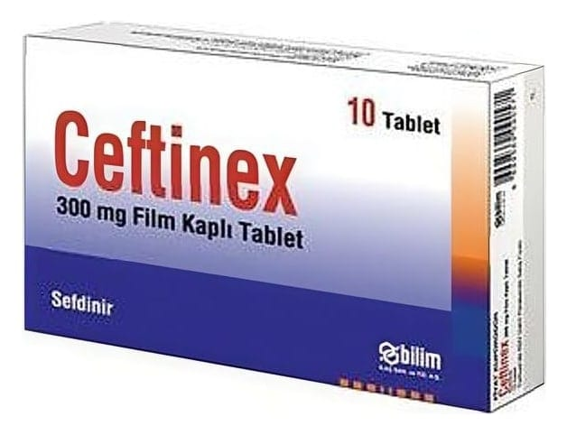

Ceftinex 300 mg Film Kaplı Tablet, 10 Adet

Ne için kullanılır
KT · Bölüm 1CEFTİNEX’ in etkin maddesi olan sefdinir, oral geniş spektrumlu, üçüncü kuşak sefalosporin grubundan antibiyotiktir.
CEFTİNEX, 10, 14 ve 20 adet beyaza yakın renkli, oblong, bikonveks film kaplı tabletler içeren blisterlerde ve kullanma talimatı ile birlikte karton kutuda ambalajlanmıştır.
CEFTİNEX aşağıda yer alan hastalıkların tedavisinde kullanılır.
Ergen ve yetişkinlerde: • Toplum kökenli akciğer iltihabı ( zatürre, pnömoni) • Kronik bronş iltihabının akut alevlenmesi • Yüz kemiklerinin içindeki hava boşluklarının iltihabı ( akut maksiller sinüzit) • Bademcik (tonsillit)/yutak (farenjit) iltihabı • Komplike olmayan cilt ve yumuşak doku enfeksiyonları